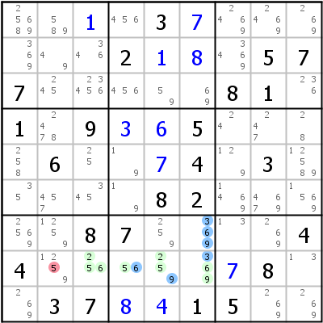

HoDoKu Lösungstechnik-Index: Beispiel für "Death Blossom"

Originales Sudoku:
....3.......2...577.....81.1.9..5....6...4.3.....82.....87....44......8..37..15..
Verwenden Sie die folgende Zeile um das Sudoku in HoDoKu zu laden:
:9004:5:..+1.3+7......2+1+8.577.....81.1.9+3+65....6..+74.3.....82.....87....44.....+78..37+8+415..:212 412 914 932 934 939 277 677 977 984 289 689 989:582:
Die folgende Darstellung kann per Zwischenablage in die meisten Sudoku-Programme eingefügt werden:
.--------------------.---------------.-------------------. | 25689 589 1 | 456 3 7 | 2469 2469 269 | | 369 49 346 | 2 1 8 | 3469 5 7 | | 7 245 23456 | 456 59 69 | 8 1 236 | :--------------------+---------------+-------------------: | 1 2478 9 | 3 6 5 | 24 247 28 | | 258 6 25 | 19 7 4 | 129 3 12589 | | 35 457 345 | 19 8 2 | 1469 4679 1569 | :--------------------+---------------+-------------------: | 2569 1259 8 | 7 259 369 | 13 269 4 | | 4 1259 256 | 56 259 369 | 7 8 13 | | 269 3 7 | 8 4 1 | 5 269 269 | '--------------------'---------------'-------------------'
Darstellung des Lösungsschrittes:
.----------------------.------------------.-------------------.
| 25689 589 1 | 456 3 7 | 2469 2469 269 |
| 369 49 346 | 2 1 8 | 3469 5 7 |
| 7 245 23456 | 456 59 69 | 8 1 236 |
:----------------------+------------------+-------------------:
| 1 2478 9 | 3 6 5 | 24 247 28 |
| 258 6 25 | 19 7 4 | 129 3 12589 |
| 35 457 345 | 19 8 2 | 1469 4679 1569 |
:----------------------+------------------+-------------------:
| 2569 1259 8 | 7 259 *369 | 13 269 4 |
| 4 12-59 C256 | C56 C259 A369 | 7 8 13 |
| 269 3 7 | 8 4 1 | 5 269 269 |
'----------------------'------------------'-------------------'
Death Blossom: [r7c6], -3- r8c3456 {23569}, -6- r8c4 {56}, -9- r8c345 {2569} => r8c2<>5
Copyright © 2008-12 von Bernhard Hobiger
Zuletzt geändert am 5. Mai 2025 von shorty#3746
(basierend auf dem 1to9only Github-Repo)
Alles Material auf dieser Site unterliegt der GNU FDLv1.3.